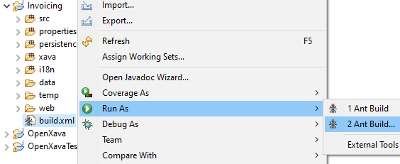
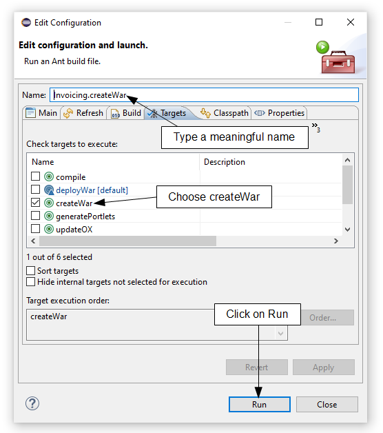

Deploy in production with Tomcat
You can deploy your OpenXava applications in any Java application server
with support for Servlet 3.0 or better. For this guide we're going to use
Apache Tomcat to deploy your OpenXava application. Tomcat is the most used
and robust Java application server, ideal for production environments.
Download and install Tomcat
Download Tomcat 9
from Apache. OpenXava also works fine with Tomcat 8 and 7. Uncompress
Tomcat in a folder of your choice. Go to the
webapps folder and
remove all the folders inside:
docs, examples, host-manager, manager
and
ROOT. They are example and management apps that you don't want
to have in a production system.
The JDBC driver
You have to copy the JDBC driver jar to the lib folder of your
Tomcat. If you're still using the HSQLDB database included with OpenXava,
this jar is hsqldb.jar from OpenXava/lib. But if you're
using MySQL, Oracle, PostgreSQL, etc. you should obtain the correct JDBC
driver for your database and copy it to Tomcat lib folder.
Create and deploy the WAR
In order to deploy your application into Tomcat you have to create a WAR
file from your project. For that, click on right mouse button on build.xml
file of your project and choose Run As > Ant Build...:

Then deselect any selected Ant
target and select the createWar Ant target:

Additionally, you can put a better
name like Invoicing.createWar in this case. Click on Run.
Wait until the the Ant target execution finishes, afterwards get the file
Invoicing.war (or YourApplicationName.war) and copy it to
the webapps folder of your Tomcat. Your application is already
deployed.
Run Tomcat
To
start your Tomcat, with Windows click on the Start
button, type cmd and
press ENTER, then::
set JAVA_HOME=C:\Program Files\Java\jdk-11.0.3
cd tomcat-9.0.24\bin
startup
With Linux/Mac:
export JAVA_HOME=/usr/lib/jvm/java-11-openjdk
cd tomcat-9.0.24/bin
./startup.sh
Of course, adjust the URLs for
your own Tomcat and Java directories.
Congratulations! Your
application is already running in production, just use your browser to
access to it.
Configure against production database
By default your application goes against the same database you're using in
development, the one defined in the datasource from web/META-INF/context.xml
of your project. Most times you want to use a different database for
production. To overwrite the database used by your application you have to
define the datasource in the context.xml found in the conf
folder of your Tomcat. For our example, we should edit tomcat-9.0.24/conf/context.xml
and leave it in this way:
<?xml version="1.0" encoding="UTF-8"?>
<!-- The contents of this file will be loaded for each web application -->
<Context>
<!-- Default set of monitored resources. If one of these changes, the -->
<!-- web application will be reloaded. -->
<WatchedResource>WEB-INF/web.xml</WatchedResource>
<WatchedResource>WEB-INF/tomcat-web.xml</WatchedResource>
<WatchedResource>${catalina.base}/conf/web.xml</WatchedResource>
<!-- Uncomment this to disable session persistence across Tomcat restarts -->
<!--
<Manager pathname="" />
-->
<Resource name="jdbc/InvoicingDS" auth="Container" type="javax.sql.DataSource"
maxTotal="20" maxIdle="5" maxWaitMillis="10000"
username="invoicing" password="sfh4tjdl" driverClassName="org.hsqldb.jdbcDriver"
url="jdbc:hsqldb:hsql://localhost:1999"/>
</Context>
We use InvoicingDS as
datasource name, the same of the context.xml included in your WAR,
but we define different url, username and password.